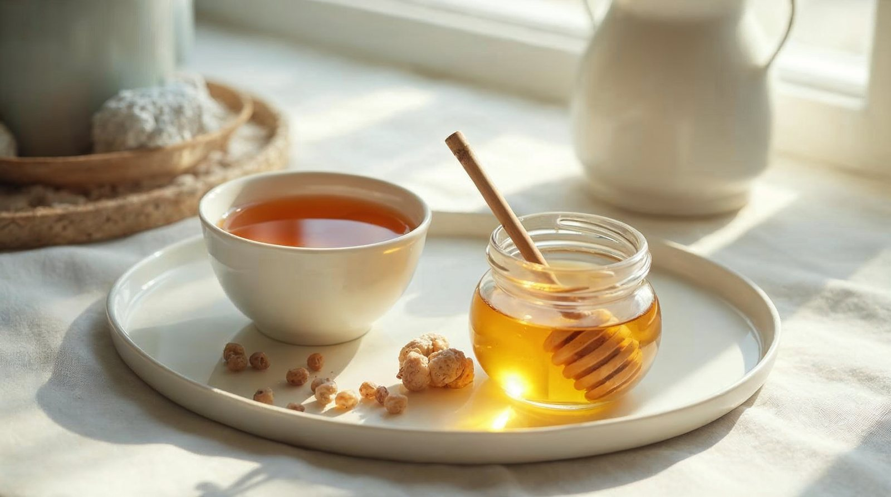
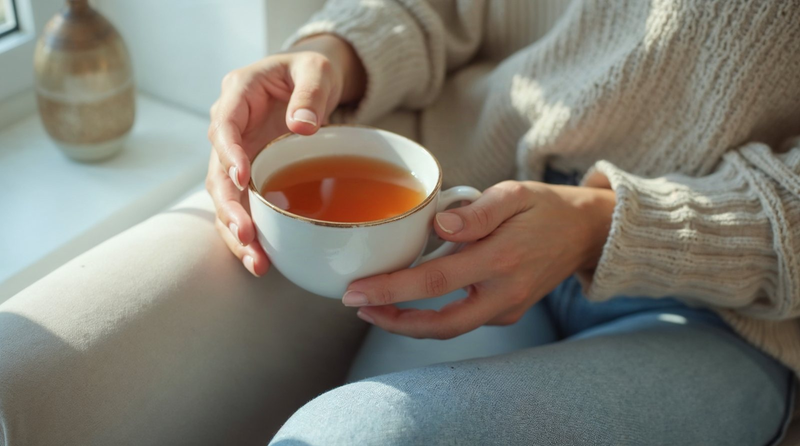
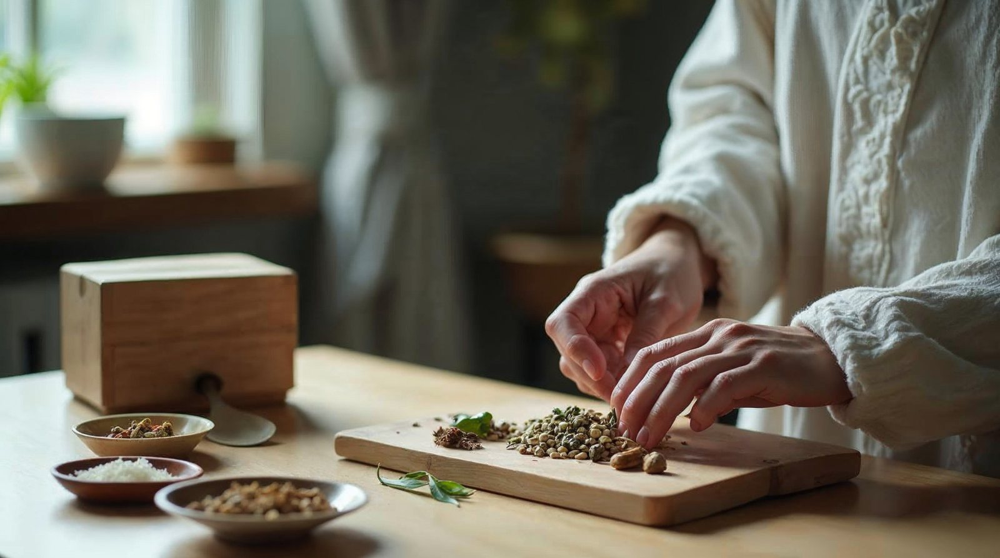
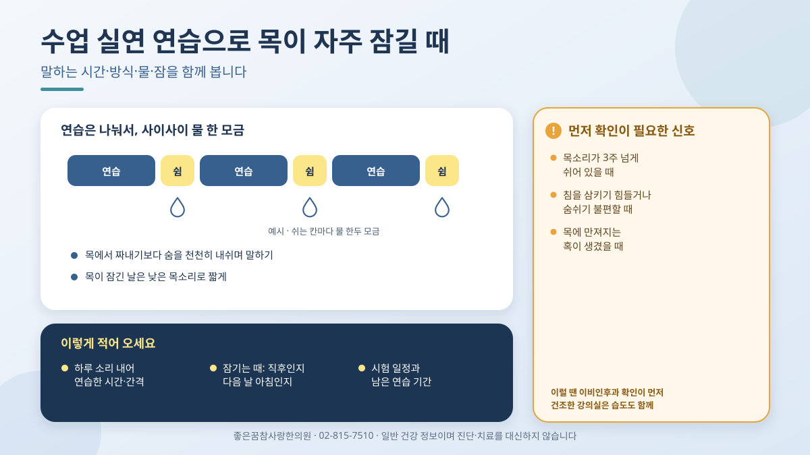

이종호 한의사 감수좋은꿈참사랑한의원 대표원장 (한의사 면허번호 19769)발행 2026-11-24 · 수정 2026-11-26
이 글의 차례
- 왜 이런 불편이 생길 수 있나요
- 왜 수업 실연 연습이 유독 목에 부담이 될까요?
- 목 잠김은 어떤 모습으로 나타나나요?
- 감기나 다른 원인과는 어떻게 구별하나요?
- 상황별 예시
- 스스로 점검해 보세요
- 먼저 이렇게 여쭙니다
- 일상에서 먼저 해 볼 수 있는 것
- 목을 덜 쓰는 연습 시간표
- 스터디에서 목을 아끼는 요령
- 시험까지 남은 기간에 따라 이렇게 나눠 봅니다
- 숨과 자세는 어떻게 바꿔 볼까요?
- 긴장하면 왜 목소리가 더 쉽게 잠길까요?
- 연습 전후 5분 루틴
- 목이 잠긴 날은 어떻게 지내면 좋을까요?
- 한의원에서 함께 살필 수 있는 경우
- 첫 진료는 이렇게 진행됩니다
- 이렇게 기록해 오시면 상담이 쉬워집니다
- 이런 증상은 먼저 확인이 필요합니다
연습 시간을 나눠 목을 쉬게 하고 숨을 천천히 내쉬며 말하는 습관을 들이면 목 잠김이 덜해지는 경우가 많습니다. 임용시험 2차를 준비하는 분들은 수업 실연과 면접을 반복해 연습해, 스터디에서 몇 시간씩 말하고 나면 목이 잠기고 다음 날 목소리가 잘 나오지 않는다는 이야기를 듣습니다.
2차 시험까지 남은 시간은 짧고 연습은 해야 하니, 목이 잠겨도 쉬기가 어렵습니다. 저는 연습량을 무작정 줄이자고 하기보다, 같은 시간을 연습하더라도 목을 덜 쓰는 방법과 쉬는 순서를 함께 정해 보자고 말씀드립니다.
왜 이런 불편이 생길 수 있나요
- 큰 소리로 오래 말하면 성대가 쉴 틈이 없어 목이 잠기기 쉽습니다.
- 긴장하면 목과 어깨에 힘이 들어가고 숨이 얕아져 목에서 소리를 짜내게 되는 분이 있습니다.
- 물을 적게 마시고 건조한 강의실에서 연습하면 목이 더 쉽게 마릅니다.
- 잠이 부족하고 피곤한 날에는 같은 양을 말해도 목이 더 빨리 지칩니다.
- 실연은 교실 뒤까지 들리게 말하는 연습이라 평소 대화보다 목소리를 높이고 또박또박 끊어 말하게 되어 부담이 커집니다.
왜 수업 실연 연습이 유독 목에 부담이 될까요?
평소 대화는 주고받는 사이에 쉬는 틈이 있지만, 수업 실연은 정해진 시간 동안 혼자 쉬지 않고 말합니다. 여기에 판서를 하며 칠판을 보고 말하거나 학생 역할을 향해 고개를 돌리며 말하다 보면 목을 비튼 채 소리를 내는 순간이 많아집니다.
스터디에서는 여러 사람이 차례로 실연하고 서로 피드백을 하다 보니, 내 차례가 아닐 때도 계속 말하게 됩니다. 하루 연습을 마치고 돌아보면 생각보다 훨씬 오래 말했다는 분이 많습니다.
한의학에서는 말을 많이 하면 기운이 소모되고, 목이 마르는 것은 진액이 부족해진 모습으로 봅니다. 그래서 목 상태와 함께 피로, 입 마름, 잠, 식사를 묶어서 살핍니다.
목 잠김은 어떤 모습으로 나타나나요?
같은 "목이 잠긴다"라도 모습이 다르면 살필 방향이 조금씩 달라집니다.
- 연습 직후 목소리가 갈라지고 쉬다가 하룻밤 자면 대부분 돌아오는 경우
- 아침에 일어나면 목이 잠겨 있다가 말을 조금 하면 풀리는 경우
- 높은 음이 잘 안 나오고 목소리가 금방 탁해지는 경우
- 목 안이 칼칼하고 따가우며 헛기침이 잦은 경우
- 목소리보다 목과 어깨가 뻐근하고 조이는 느낌이 먼저 오는 경우
어느 모습이 가장 가까운지 연습 일지에 함께 적어 두면, 어떤 연습을 한 날 어떤 모습이 나타나는지 연결해 볼 수 있습니다.
연습 직후에만 잠기고 하룻밤 자면 돌아온다면 사용량과 쉬는 방법을 먼저 조절해 봅니다. 쉬어도 며칠씩 이어진다면 더 자세히 살피는 것이 좋습니다.
감기나 다른 원인과는 어떻게 구별하나요?
목이 잠기는 이유가 목소리를 많이 써서인지, 다른 원인이 겹쳐 있는지에 따라 대처가 달라집니다.
- 열, 콧물, 몸살이 함께 있다면 감기 같은 감염이 겹쳐 있을 가능성이 있어 목을 더 쉬게 합니다.
- 신물이 올라오고 아침에 목이 유난히 칼칼하다면 위의 불편이 목에 영향을 주는 경우도 있어 식사 시각을 함께 봅니다.
- 담배 연기나 먼지가 많은 곳에서 연습한 뒤 심해진다면 환경을 먼저 바꿔 봅니다.
- 쉬어도 3주 넘게 목소리가 돌아오지 않는다면 이비인후과에서 성대를 직접 확인하는 것이 먼저입니다.
상황별 예시
- 예를 들어 오전에 스터디 실연 세 번, 오후에 면접 연습 두 시간을 이어서 하는 경우, 저녁 무렵 목소리가 갈라지고 다음 날 아침까지 이어질 수 있습니다. 실연과 면접 사이에 30분쯤 말하지 않는 시간을 끼워 넣는 것부터 해 볼 수 있습니다.
- 예를 들어 빈 강의실에서 혼자 연습하며 교실 끝까지 들리게 소리를 크게 내는 경우, 목에 힘을 주어 소리를 밀어내게 되기 쉽습니다. 크기보다 또렷함에 신경 쓰고, 배에서 숨을 내쉬며 말해 보세요.
- 예를 들어 연습 중에 물을 거의 마시지 않고 커피만 마시는 경우, 입과 목이 더 쉽게 마릅니다. 책상 위에 물병을 두고 실연 한 번마다 두세 모금씩 마시는 습관을 들여 보세요. 커피는 하루 한두 잔으로 정하고, 나머지는 물이나 따뜻한 보리차로 바꿔 보시는 것도 좋습니다.
스스로 점검해 보세요
- 하루에 소리 내어 연습하는 시간이 세 시간을 넘는다
- 연습 중에 물을 거의 마시지 않는다
- 말할 때 목과 어깨에 힘이 들어가는 것이 느껴진다
- 연습 후 목소리가 갈라지거나 쉰 소리가 난다
- 다음 날 아침에도 목이 잠겨 있다
- 잠이 여섯 시간보다 적은 날이 많다
특히 물을 거의 마시지 않으면서 하루 세 시간 넘게 소리 내어 연습한다면 그 두 가지부터 손보는 것이 좋습니다. 잠이 부족한 날이 이어지면 목이 회복할 시간도 그만큼 줄어듭니다.
세 가지 이상 해당된다면 연습 방식과 쉬는 간격부터 바꿔 보세요. 바꿔도 목 잠김이 자주 반복된다면 진료 때 이 목록을 함께 보며 이야기를 나누면 좋습니다.

먼저 이렇게 여쭙니다
- 하루에 소리 내어 연습하는 시간이 얼마나 되나요?
- 목에 힘을 주어 크게 말하는 편인가요?
- 목이 잠기는 것은 연습 직후인가요, 다음 날 아침인가요?
- 목이 마를 때 물을 자주 마시나요?
- 연습하는 곳이 건조하거나 냉난방 바람이 센가요?
- 2차 시험까지 남은 기간과 하루 연습 일정은 어떤가요?
연습량과 시험 일정을 함께 여쭙는 것은 남은 기간 안에서 현실적인 계획을 세우기 위해서입니다. 연습을 멈추라는 말씀을 드리려는 것이 아니니, 실제 하루 일정을 그대로 말씀해 주시면 됩니다.

일상에서 먼저 해 볼 수 있는 것
- 연습 사이사이 물을 한두 모금씩 마시기
- 목에서 소리를 짜내기보다 숨을 천천히 내쉬며 말하기
- 연습 시간을 나눠 목을 쉬는 시간 두기
- 목이 잠긴 날은 낮은 목소리로 짧게 말하기
- 스터디 전날에는 늦게까지 큰 소리로 말하는 일 줄이기
- 연습을 녹음해 두고, 소리 내지 않고 들으며 고칠 점을 찾는 시간을 섞기
- 판서할 때는 칠판을 보며 말하지 말고, 쓰고 나서 몸을 돌린 뒤 말하기
목을 덜 쓰는 연습 시간표
연습량을 줄이기 어렵다면 소리 내는 연습과 소리 내지 않는 연습을 번갈아 배치해 보세요. 같은 하루라도 목이 쉬는 시간이 생깁니다.
- 오전: 지도안 정리와 판서 계획처럼 소리를 내지 않는 준비
- 점심 뒤: 실연을 소리 내어 연습하되 한 번 하고 10~15분 쉬기
- 오후: 녹음한 실연을 듣고 고칠 점 적기, 머릿속으로 흐름만 따라가 보기
- 저녁: 면접 답변은 작은 목소리로 내용 위주로 정리하고, 큰 소리 연습은 하루 한두 번으로
시험이 가까울수록 실제처럼 연습하고 싶어지지만, 실전 목소리를 지키려면 마지막 며칠은 오히려 소리 내는 연습을 조금 줄이는 것이 도움이 됩니다.
스터디에서 목을 아끼는 요령
임용 2차 스터디는 실연, 피드백, 면접 연습이 이어져 하루 종일 말하게 됩니다. 스터디 방식을 조금만 바꿔도 목이 쉬는 시간을 만들 수 있습니다.
- 피드백은 말로 길게 하기보다 메모지나 단체 대화방에 적어서 나누기
- 실연 순서를 정할 때 같은 사람이 연달아 두 번 하지 않게 하기
- 스터디실 문을 닫고 바깥 소음을 줄여 목소리를 높이지 않아도 되게 하기
- 한 시간마다 5분은 모두 말하지 않는 시간으로 정하기
- 면접 질문 연습은 답의 뼈대만 말하고, 다듬는 것은 글로 하기
혼자 연습할 때도 녹음기를 켜 두고 작은 목소리로 흐름을 잡은 뒤, 마지막 한 번만 실전 크기로 해 보는 식으로 나누면 목의 부담이 크게 줄어듭니다.
시험까지 남은 기간에 따라 이렇게 나눠 봅니다
남은 기간에 따라 연습의 무게를 다르게 두면 시험 당일 목소리를 지키는 데 도움이 됩니다.
- 시험까지 한 달 이상: 실연 구성과 판서 계획을 다듬는 시기로, 큰 소리 연습은 하루 두세 번 안에서
- 2~3주 전: 실전처럼 시간을 재며 연습하되 한 번 하고 충분히 쉬기
- 마지막 일주일: 큰 소리 연습은 하루 한두 번으로 줄이고, 머릿속 연습과 녹음 듣기 위주로
- 시험 전날: 큰 소리 연습은 쉬고 일찍 잠자리에 들기
막바지에 불안해서 연습량을 늘리다 목이 잠기는 경우가 많습니다. 마지막 며칠은 목을 아끼는 것도 준비의 일부라고 생각해 주세요.
숨과 자세는 어떻게 바꿔 볼까요?
목소리는 목에서만 나오지 않고 숨이 받쳐 줄 때 편하게 나옵니다. 숨이 넉넉하면 크게 힘주지 않아도 소리가 멀리 갑니다. 긴장하면 어깨가 올라가고 가슴으로만 숨을 쉬게 되어 목이 그 일을 떠맡게 됩니다.
- 말하기 전에 코로 천천히 들이쉬고, 배가 살짝 들어가는 것을 느끼며 내쉬면서 첫마디 시작하기
- 문장을 길게 끌지 말고 숨이 남아 있을 때 끊어 말하기
- 턱을 앞으로 내밀지 않고 어깨를 내린 채 서기
- 양발을 어깨너비로 벌려 몸의 무게를 고르게 나누기
거울 앞에서 실연하며 어깨와 목에 힘이 들어가는 순간을 찾아보면 스스로 고칠 점이 잘 보입니다.
긴장하면 왜 목소리가 더 쉽게 잠길까요?
같은 연습이라도 스터디원 앞이나 평가받는 자리에서는 목이 더 빨리 지친다는 분이 많습니다. 긴장하면 어깨와 목 앞쪽 근육이 굳고 숨이 짧아져, 짧은 숨으로 큰 소리를 내려다 목이 그 부담을 떠안게 되기 때문입니다.
또 긴장한 상태에서는 말이 빨라지고 쉬는 틈 없이 이어지기 쉽습니다. 실연 대본에 숨 쉴 곳을 빗금으로 표시해 두고, 그 자리에서 한 박자 쉬며 숨을 채우는 연습을 해 보세요. 듣는 사람에게도 차분하게 들리고 목도 덜 지칩니다.
한의학에서는 긴장이 오래 이어지면 기운이 목과 가슴에 뭉쳐, 목에 무언가 걸린 듯한 느낌이나 답답함으로 나타난다고 봅니다. 그래서 목 잠김으로 오신 분께도 잠, 가슴 두근거림, 소화를 함께 여쭙습니다.
연습 전후 5분 루틴
목도 운동 전 몸처럼 천천히 시작하고 천천히 마무리하면 부담이 덜합니다. 짧은 순서를 정해 두면 매번 챙기기 쉽습니다.
- 연습 전: 어깨를 천천히 돌리고 목을 좌우로 가볍게 기울이기, 따뜻한 물 몇 모금, 낮은 소리로 허밍
- 연습 중: 실연 한 번마다 물 두세 모금, 어깨에 힘이 들어갔는지 확인
- 연습 후: 10분쯤 말하지 않고 쉬기, 따뜻한 물 마시기, 목 뒤와 어깨를 손으로 가볍게 주무르기
목이 잠긴 날은 어떻게 지내면 좋을까요?
목이 이미 잠겼다면 그날은 목을 아끼는 쪽으로 하루를 바꿉니다. 그날 해야 할 실연은 녹음 듣기나 지도안 다듬기로 바꿔도 충분히 준비가 됩니다. 하루 이틀 아끼면 다음 연습을 이어 가기가 훨씬 수월합니다.
- 따뜻한 물이나 자극이 적은 차를 조금씩 자주 마시기
- 맵거나 기름진 음식, 술은 피하기
- 헛기침을 하고 싶을 때는 침을 삼키거나 물을 한 모금 마시기
- 젖은 수건을 방에 널거나 가습기로 공기를 촉촉하게 하기
- 큰 소리로 통화하거나 시끄러운 식당에서 오래 이야기하는 일 피하기
- 평소보다 30분이라도 일찍 잠자리에 들기

한의원에서 함께 살필 수 있는 경우
- 말을 많이 한 뒤 목이 자주 잠기는 경우 목과 잠, 피로를 함께 살핍니다.
- 긴장하면 목이 조이는 느낌이 드는 경우 긴장과 호흡을 함께 살핍니다.
- 목이 마르고 칼칼한 느낌이 오래가는 경우 생활 환경을 함께 살핍니다.
좋은꿈참사랑한의원에서는 모든 분께 맥부터 짚으며 목이 잠기는 때와 연습량, 생활 환경, 잠을 여쭙고, 필요하다고 판단될 때 설진을 더해 몸 상태를 살핍니다. 침이나 한약 상담 등 상태에 맞는 방법을 정하고, 귀가 전에는 집에서 지켜볼 점을 알려 드립니다.
목과 어깨 근육이 단단하게 굳어 소리를 낼 때 조이는 느낌이 크다면 목 주변 긴장을 함께 풀어 드리기도 합니다. 한약을 상담할 때는 지금 드시는 약을 먼저 확인하고, 임신 중이시면 미리 알려 주세요.
첫 진료는 이렇게 진행됩니다
처음 오시면 접수 뒤 목이 잠기기 시작한 시기, 하루 연습 시간, 연습 장소의 환경, 잠과 식사를 차례로 여쭙습니다. 모든 분께 맥을 짚고, 필요하다고 판단되면 혀의 상태와 목·어깨 근육의 긴장을 살핍니다.
이야기를 들어 보고 성대를 직접 봐야 한다고 판단되면 이비인후과 확인을 먼저 권합니다. 함께 살필 수 있는 경우에는 침이나 한약 상담 가운데 지금 상태에 맞는 방법을 정하고, 시험 일정에 맞춘 연습과 쉬는 계획을 함께 세웁니다.
이렇게 기록해 오시면 상담이 쉬워집니다
- 하루 소리 내어 연습하는 시간과 쉬는 간격
- 목이 잠기는 시점(연습 직후, 다음 날 아침)
- 목 통증, 기침, 삼킬 때의 불편이 있는지
- 시험 일정과 남은 연습 기간
연습 날마다 "실연 3회, 면접 1시간, 물 500ml, 저녁에 목 잠김"처럼 한 줄로 적어 두면 어느 정도까지 괜찮고 어디서부터 무리가 되는지가 보입니다. 그 기준을 알면 남은 기간의 연습 계획을 세우기도 쉬워집니다.
이런 증상은 먼저 확인이 필요합니다
- 목소리가 3주 넘게 쉬어 있거나 목에 혹이 만져지는 경우
- 침을 삼키기 힘들거나 숨쉬기 불편한 경우
이런 신호가 있으면 한의원보다 가까운 병원이나 응급실을 먼저 찾으세요.

여쭙는 것
- 하루에 소리 내어 연습하는 시간이 얼마나 되나요?
- 목에 힘을 주어 크게 말하는 편인가요?
- 목이 잠기는 것은 연습 직후인가요, 다음 날 아침인가요?
생활에서 해 볼 것
- 연습 사이사이 물을 한두 모금씩 마시기
- 목에서 소리를 짜내기보다 숨을 천천히 내쉬며 말하기
- 연습 시간을 나눠 목을 쉬는 시간 두기
한의원에서 함께 살필 것
- 말을 많이 한 뒤 목이 자주 잠기는 경우 목과 잠, 피로를 함께 살핍니다.
- 긴장하면 목이 조이는 느낌이 드는 경우 긴장과 호흡을 함께 살핍니다.
- 목이 마르고 칼칼한 느낌이 오래가는 경우 생활 환경을 함께 살핍니다.
먼저 확인이 필요한 신호
- 목소리가 3주 넘게 쉬어 있거나 목에 혹이 만져지는 경우
- 침을 삼키기 힘들거나 숨쉬기 불편한 경우
한눈에 보는 표
| 구분 | 핵심 |
|---|---|
| 여쭙는 것 | 하루에 소리 내어 연습하는 시간이 얼마나 되나요? 목에 힘을 주어 크게 말하는 편인가요? |
| 생활에서 해 볼 것 | 연습 사이사이 물을 한두 모금씩 마시기 목에서 소리를 짜내기보다 숨을 천천히 내쉬며 말하기 |
| 한의원에서 함께 살필 것 | 말을 많이 한 뒤 목이 자주 잠기는 경우 목과 잠, 피로를 함께 살핍니다. 긴장하면 목이 조이는 느낌이 드는 경우 긴장과 호흡을 함께 살핍니다. |
| 먼저 확인이 필요한 신호 | 목소리가 3주 넘게 쉬어 있거나 목에 혹이 만져지는 경우 침을 삼키기 힘들거나 숨쉬기 불편한 경우 |
자주 묻는 질문
목이 잠겼을 때 속삭이면 덜 무리가 가나요?
속삭이는 것도 목에 힘이 들어갈 수 있어, 편한 낮은 목소리로 짧게 말하는 것을 권합니다.
목에 좋은 차가 있나요?
따뜻한 물이나 자극이 적은 차를 조금씩 마시면 목이 덜 마르는 데 도움이 될 수 있습니다.
연습 전에 목을 풀어 주는 방법이 있나요?
입술을 가볍게 떨며 소리를 내거나 낮은 소리로 허밍하는 식으로 부드럽게 시작하는 분이 많습니다. 아프면 멈추고 쉬어 주세요.
시험 당일 목이 잠기면 어떻게 하나요?
전날은 큰 소리 연습을 줄이고 일찍 잠자리에 드세요. 당일에는 물을 조금씩 마시고, 대기하는 동안 말을 아끼며 천천히 내쉬는 호흡을 해 보세요.
진료 시간은 어떻게 되나요?
좋은꿈참사랑한의원은 평일 09:30~20:00(점심 13:00~14:00), 토·일·공휴일 09:30~15:00에 진료합니다.
좋은꿈참사랑한의원은 재진 때 지난번 이야기부터 이어서 여쭙니다. 진료시간과 예약은 오시는 길에서 확인하세요.
어디서 상담받을 수 있나요?
좋은꿈참사랑한의원은 서울 동작구 만양로2길 2 신성빌딩 3층·5층(서울 동작구 상도동, 7호선 상도역 3번 출구 근처)에 있습니다. 한의사 3명(이종호 대표원장, 조영기 수석진료원장, 정원영 진료원장)이 진료합니다. 진료시간은 평일 09:30~20:00(점심 13:00~14:00), 토·일·공휴일 09:30~15:00이며, 방문 전 전화로 확인을 권합니다. 예약은 네이버 예약, 카카오톡 상담, 전화 02-815-7510로 받습니다.
이 글은 일반적인 건강 정보이며 개인의 진단이나 치료를 대신하지 않습니다. 증상이 있거나 복용 중인 약이 있다면 진료를 통해 확인하세요. 치료 효과는 개인마다 다를 수 있습니다.
작성 기준: 일반적으로 알려져 있는 건강 정보를 참고해 정리했습니다(대표원장 감수). 증상 기록은 1~2주 동안 하루 1회, 비슷한 시간에 적어 오시면 지난 상태와 비교하기 쉽습니다.